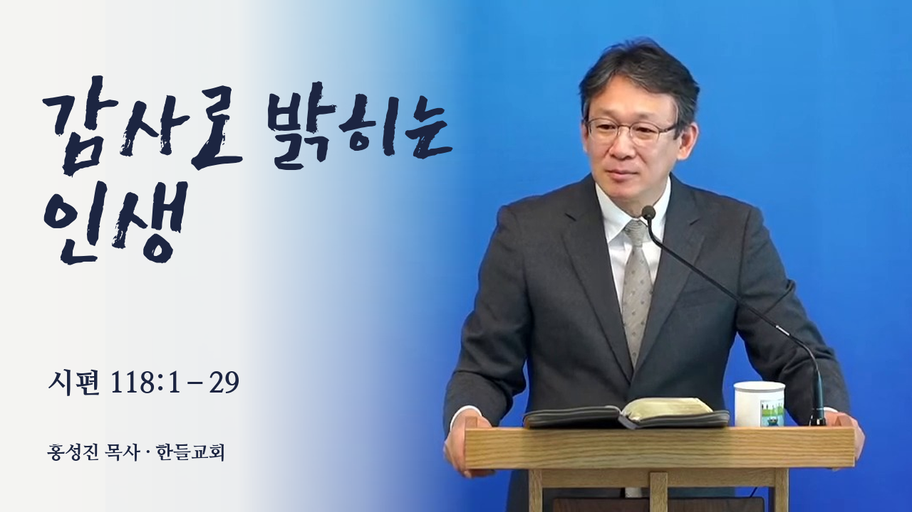

2026년 11월 15일 주일 · 한들교회 유튜브 자료 모음
한들교회 주일설교 유튜브 자료
「감사로 밝히는 인생」
시편 118장 1–29절 · 홍성진 목사. 롱폼 제목·설명·챕터와 숏츠 3편을 한곳에 모았습니다. 숏츠는 이 페이지에서 바로 보고 받을 수 있습니다.
18:09롱폼 길이 (성경 봉독 제외)
16개챕터
3편숏츠
롱폼

썸네일 받기 (1280×720)
롱폼 영상은 별도로 전달

롱폼은 성경 봉독을 빼고 설교 시작("긴 말씀입니다", 라이브 47:09)부터 끝 축원(라이브 1:05:19)까지입니다. 영상 파일은 용량이 커서 이 페이지에 올리지 않고 별도로 전달합니다.
제목
감사로 밝히는 인생 | 시편 118장 1–29절 | 홍성진 목사
설명 (챕터 포함)
상황은 그대로인데 내 앞길이 환해질 수 있을까요? 원수들에게 벌떼처럼 에워싸인 시편 118편의 기자는 오히려 "여호와께 감사하라"고 노래합니다. 감사는 저절로 터져 나오지 않습니다. 억지로라도 감사 제목을 찾아 올려드릴 때, 어둠 속에 등불이 켜집니다.
📖 본문: 시편 118장 1–29절
🎙 설교: 홍성진 목사
⛪ 한들교회 | 2026년 11월 15일 주일예배 설교
📍 경기도 광주시 역동 282, 라뷰빌딩 5층 · 주일예배 오전 11시
0:00 오늘 제목, 감사로 밝히는 인생
0:45 좋은 것은 아끼지 마세요
1:33 아낌없이 써도 남는 것, 감사
2:03 옆 사람에게 건네는 감사
3:02 어두운 방에 켜는 등불
3:51 감사로 일상을 살아낸 한 사람
6:34 어두운 인생, 감사로 밝혀 보세요
7:19 벌떼처럼 에워싸인 시편 기자
9:34 슬픔이 아닌 승리의 노래
10:28 상황은 어둠인데 빛으로 사는 이유
11:58 우리가 감사할 이유
13:34 감사는 저절로 나오지 않는다
14:24 감사는 억지로 해야 된다
15:47 인생을 바꾸는 30분
16:45 밝은 인생의 비결
17:45 감사의 자리로의 초대
#한들교회 #홍성진목사 #주일설교
챕터
- 0:00오늘 제목, 감사로 밝히는 인생
- 0:45좋은 것은 아끼지 마세요
- 1:33아낌없이 써도 남는 것, 감사
- 2:03옆 사람에게 건네는 감사
- 3:02어두운 방에 켜는 등불
- 3:51감사로 일상을 살아낸 한 사람
- 6:34어두운 인생, 감사로 밝혀 보세요
- 7:19벌떼처럼 에워싸인 시편 기자
- 9:34슬픔이 아닌 승리의 노래
- 10:28상황은 어둠인데 빛으로 사는 이유
- 11:58우리가 감사할 이유
- 13:34감사는 저절로 나오지 않는다
- 14:24감사는 억지로 해야 된다
- 15:47인생을 바꾸는 30분
- 16:45밝은 인생의 비결
- 17:45감사의 자리로의 초대
숏츠 3편
화·목·토 저녁 8시에 올릴 숏츠 3편입니다. 아직 올리지 않았고, 아래 일정은 예정입니다. 각 편 아래 글은 이 구간을 고른 이유입니다.
-
입맛 없어도 밥은 먹죠 감사도 억지로
설교의 가장 독특한 주장 '감사는 억지로 해야 된다'를 밥 비유로 쉽게 풀고, 원래 20초 가까이 이어지던 회중 따라하기를 덜어내 훅이 바로 들어오게 했습니다.
영상 받기 (mp4)숏츠 제목입맛 없어도 밥은 먹죠 감사도 억지로숏츠 설명입맛 없다고 밥 안 먹나요? 찬밥에 물 말아서라도 먹어야 살듯, 감사도 억지로라도 해야 합니다. ▶ 설교 전체 보기: https://youtu.be/<롱폼 ID> 「감사로 밝히는 인생」 시편 118편 1–29절 | 홍성진 목사 ⛪ 한들교회 | 경기도 광주시 역동 282, 라뷰빌딩 5층 주일예배 오전 11시 · 이번 주일, 함께 예배해요 #한들교회 #광주교회 #주일설교 #감사 #시편118편 #홍성진목사 #shorts자막 보기 (19줄)
- 감사도 감사도 여러분 억지로 해야 된답니다
- 그런데 이게 감사가 자동으로 나오지는 않아요
- 감사가 생각보다 어렵습니다
- 그래서 감사는 어떻게 해야 된다?
- 억지로 해야 된다
- 그냥 자동으로 되지 않기 때문에 그렇습니다
- 입맛 없다고 밥 안 먹어요?
- 그러면 죽잖아요
- 찬밥에 물 말아가지고
- 부추에 고추장 찍어서라도
- 그냥 우겨 넣어야지
- 그래야지 살아지잖아요
- 똑같아요
- 감사도 감사도 여러분 억지로 해야 된답니다
- 살맛 안 난다고 쭈그리고 앉아
- 어둠 가운데 있으면 안 돼요
- 그럼 진짜 죽어요
- 억지로 감사 제목 찾아내가지고
- 그쵸? 억지로 해야 돼요
-
인생을 바꾸는 비결 감사 기도 30분
'인생을 바꾸는 비결 30분'이라는 가장 강한 문장을 콜드 오픈으로 앞에 두고, 차가운 감사가 눈물의 감사로 바뀌는 과정을 '그분의 은혜였구나' 고백까지 끊기지 않게 담았습니다(끝 어미 잘림 해결).
영상 받기 (mp4)숏츠 제목인생을 바꾸는 비결 감사 기도 30분숏츠 설명30분 동안 다른 기도 말고 감사 제목만 올려 보세요. 처음엔 어색하고 차가운 감사가 뜨거운 감사로, 눈물의 감사로 바뀝니다. ▶ 설교 전체 보기: https://youtu.be/<롱폼 ID> 「감사로 밝히는 인생」 시편 118편 1–29절 | 홍성진 목사 ⛪ 한들교회 | 경기도 광주시 역동 282, 라뷰빌딩 5층 주일예배 오전 11시 · 이번 주일, 함께 예배해요 #한들교회 #광주교회 #주일설교 #감사기도 #시편118편 #홍성진목사 #shorts자막 보기 (17줄)
- 내가 30분만 드릴게 인생을 바꾸는 비결 30분
- 처음에는 그 감사는 어떻습니까?
- 어색하고 차가운 감사지
- 그러나 한 가지 두 가지 억지로 찾아내서
- 감사하고 감사하고 감사하고 감사해 보십시오
- 30분간 다른 기도 할 필요 없어
- 감사의 제목을 억지로라도 찾아내서
- 하나님 앞에 올려 보세요
- 30분 후에 당신의 인생이 어떻게 되는가?
- 밝음으로 바뀌게 됩니다
- 차가운 감사가 점점 점점 더운 감사에서
- 뜨거운 감사로 바뀌게 됩니다
- 눈물의 감사로 바뀌게 됩니다
- 선하고 인자하신 하나님께서 내 인생을 전능하신
- 능력의 손길로 붙들고 계셨구나
- 모든 것이 그분의 은혜였구나
- 라고 고백이 나오게 되는 것이죠
-
상황은 그대로인데 길이 환해졌다
자동 후보 3번은 사연 없이 결말만 있었는데, 막막했던 사연(51:00–51:18)·마음의 소리·일상의 감사를 직접 이어붙여 '상황은 그대로인데 길이 환해졌다'가 혼자서도 이해되는 간증으로 만들었습니다.
영상 받기 (mp4)숏츠 제목상황은 그대로인데 길이 환해졌다숏츠 설명사업은 어렵고 가족은 아프고, 길이 다 막혔던 한 사람이 다른 기도 없이 감사만 드렸습니다. 상황은 그대로였지만, 앞길이 환해졌습니다. ▶ 설교 전체 보기: https://youtu.be/<롱폼 ID> 「감사로 밝히는 인생」 시편 118편 1–29절 | 홍성진 목사 ⛪ 한들교회 | 경기도 광주시 역동 282, 라뷰빌딩 5층 주일예배 오전 11시 · 내일 주일, 함께 예배해요 #한들교회 #광주교회 #주일설교 #감사 #간증 #홍성진목사 #shorts자막 보기 (16줄)
- 상황은요? 환경은요? 그대로지
- 저는 감사로 일상을 살아내는 한 사람을 압니다
- 그분이 이렇게 말해요 전후좌우가 다 막히고
- 사업은 어렵고 가족은 아프고 주변에 도움의 손길은 마르고
- 너에게 정말 힘든 일뿐이 없냐?
- 이런 마음의 소리가 들리더래요
- 그런데 생각해 보니까 입에 풀칠은 하고 살더래요 자기가
- 밥 먹고 마시고 옷 입고 따뜻하게 누워 자고 깨고
- 야 이거 감사한 거구나
- 다른 기도 없이 감사만 기도했대요
- 그런데 이 기도 마치고 일어서 나가는데
- 자기의 길이 환하게 느껴지더래요
- 환하게, 밝게
- 상황은요? 환경은요? 그대로지
- 그러나 감사의 기도를 쭉 드리고 나서는
- 자기의 앞길을 좀 더 가뿐히 걸어갈 수가 있더라고
숏츠 설명의 "<롱폼 ID>" 자리는 롱폼을 올린 뒤 실제 영상 주소로 바꿉니다.